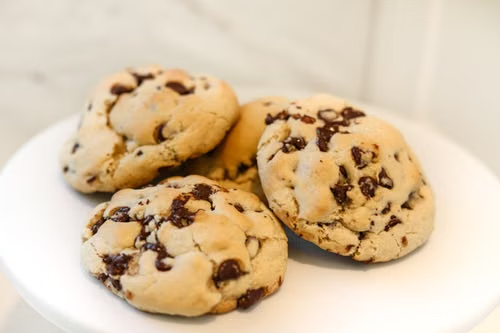

Home
Chocolate Chip Cookies

Description
Classic cookies with crisp edges, soft chewy centres and plenty of
melted chocolate in every bite.
The dough comes together in one bowl and bakes in about 10 minutes.
They are best enjoyed warm with a glass of milk.
Ingredients
- 2 1/4 cups all-purpose flour
- 1 teaspoon baking soda
- 1 teaspoon salt
- 1 cup (225g) butter, softened
- 3/4 cup white sugar
- 3/4 cup brown sugar, packed
- 2 large eggs
- 2 teaspoons vanilla extract
- 2 cups chocolate chips
Steps
- Preheat the oven to 190°C (375°F) and line two baking trays with baking paper.
- Whisk the flour, baking soda and salt together in a bowl.
- In a large bowl, beat the butter and both sugars until light and creamy, about 2 minutes.
- Beat in the eggs one at a time, then add the vanilla.
- Gradually mix in the flour mixture until just combined, then fold in the chocolate chips.
- Scoop tablespoon-sized balls of dough onto the trays, leaving space between them.
- Bake for 9 to 11 minutes, until the edges are golden but the centres still look soft.
- Cool on the tray for 5 minutes, then move to a wire rack.